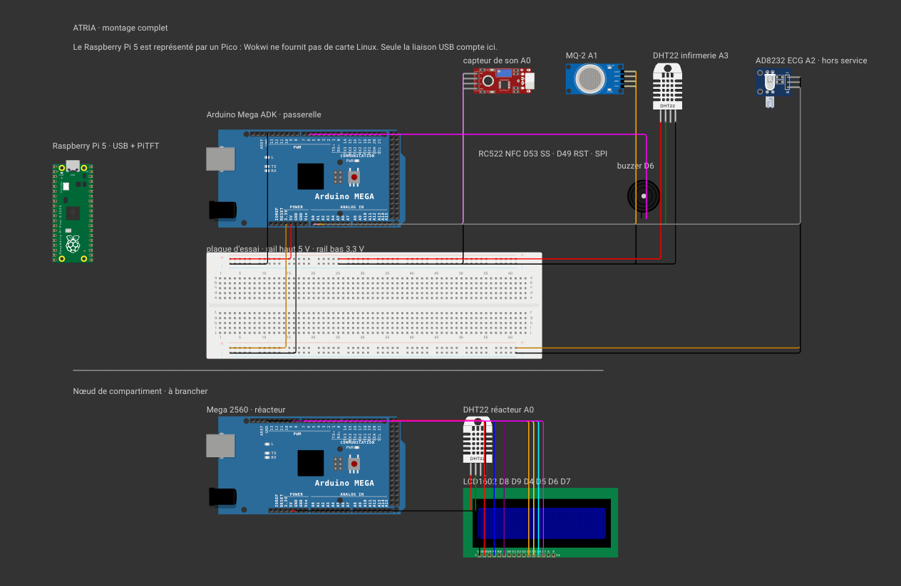

Le système de survie le plus fragile d'un vaisseau, c'est son équipage.
Sur une mission de plusieurs décennies, sans retour possible et sans assistance depuis la Terre, c'est le seul sous-système critique qu'on laisse s'auto-déclarer.
On traite l'équipage comme ce qu'il est : un système de survie critique.
Monitoring continu, régulation active, tolérance aux pannes. ATRIA mesure la santé physique et mentale de l'équipage et arbitre les affectations aux postes, entièrement hors ligne, sur une carte embarquée.
Chaque membre porte une capacité cognitive entre 0 et 1, déduite de ses constantes, de son sommeil et de sa dette sociale. Chaque poste du vaisseau exige un seuil minimal. Le régulateur compare, et tranche.
200 à bord · 24 en service actif · 6 compartiments · 6 postes
Aucun serveur, aucun cloud, aucune connexion requise à l'exécution.
Tout ce qui est livré tourne sur la carte.
Les machines de développement servent à écrire le code et à entraîner le modèle. Elles ne font pas partie du vaisseau et ne sont pas là le jour de la démonstration. On débranche le réseau, tout continue.
C'est la contrainte centrale du sujet, et c'est aussi ce qui rend la démonstration vérifiable.

Deux rails séparés, 3,3 V et 5 V · aucune liaison directe entre les Arduino et le GPIO du Pi
Une mesure d'atmosphère traverse cinq étages avant d'apparaître sur le tableau de bord. Aucune ne sort du vaisseau.
Infirmerie · 27,6 °C · 36 % d'humidité · relevé il y a moins d'une minute
L'écran de bord est un framebuffer de 320 sur 240 pixels, dessiné directement par le Pi. On y navigue avec quatre boutons physiques et on s'y identifie en présentant un badge.
Le connecteur 40 broches est entièrement occupé par l'écran : tous les capteurs passent par les Arduino.
Tout est téléchargé une fois, puis plus jamais. Le jour de la soutenance, la carte peut être coupée d'Internet du début à la fin.
Aucune décision n'est prise par un modèle statistique. Le régulateur est du code que l'on peut lire, et chaque décision porte son motif au journal.
Un modèle de 1,5 milliard de paramètres se trompe. On ne lui fait donc pas confiance, on le contraint : sa réponse est vérifiée avant d'être affichée.
Rejetée, la réponse retombe sur le texte déterministe de l'outil. Le dashboard indique toujours laquelle des deux il affiche.
Un badge se vole. Après l'avoir présenté, il faut montrer son visage : la caméra compare l'empreinte au gabarit enrôlé et exige trois images concordantes d'affilée.
similarité mesurée 0.837 · seuil 0.363
La biométrie reste ainsi compatible avec la promesse du cahier des charges : rien ne sort du vaisseau, et rien de reconstituable n'y est conservé.
Négatif. Capacité cognitive de fournier : 0.57. Seuil requis pour le poste chirurgie : 0.70. 6 heures de sommeil. Je recommande bernard.
Ce n'est pas une erreur, c'est une réponse. Elle est motivée, chiffrée, et elle propose une alternative.
Le capitaine garde la main. S'il maintient son ordre, ATRIA s'exécute, mais la dérogation est horodatée, attribuée et journalisée.
Un système qui décide à la place des humains est un système qu'on débranche. Celui-ci donne un avis argumenté et garde la trace de qui a tranché.
Le système de survie le plus fragile d'un vaisseau, c'est son équipage.
Alors on l'instrumente, on le régule, et on garde la trace de chaque décision.
La carte s'éteignait en pleine démonstration. Ce n'était ni un bug ni un hasard.
La première panne venait du bloc d'alimentation, diagnostiquée avec vcgencmd et le registre de bridage. La seconde venait de notre propre code : la boucle caméra calculait une empreinte faciale sur chaque image, pour personne.
Le modèle de langage n'écoute que sur 127.0.0.1 : il est injoignable depuis le réseau du vaisseau.
Une régression linéaire sur les 24 dernières heures donne une pente, un coefficient de détermination, et une heure de franchissement.
reyes passera sous le seuil propulsion (0.65) dans 3,9 h.
L'ajustement n'est retenu que si le R² dépasse un seuil de fiabilité. En dessous, ATRIA dit qu'il ne sait pas plutôt que d'annoncer une dérive inventée.